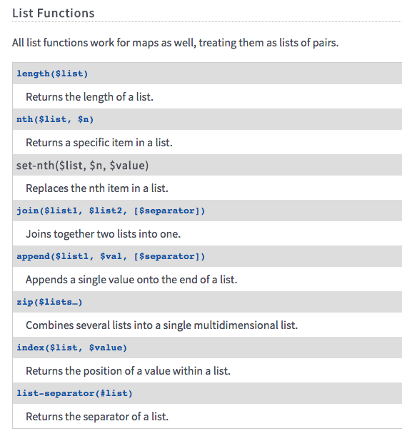
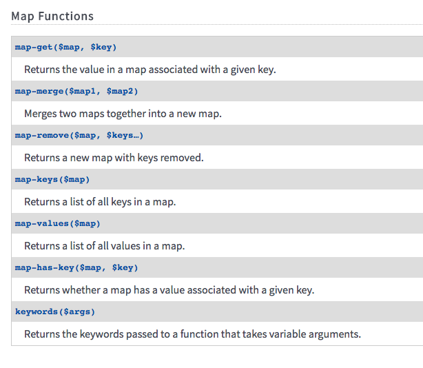
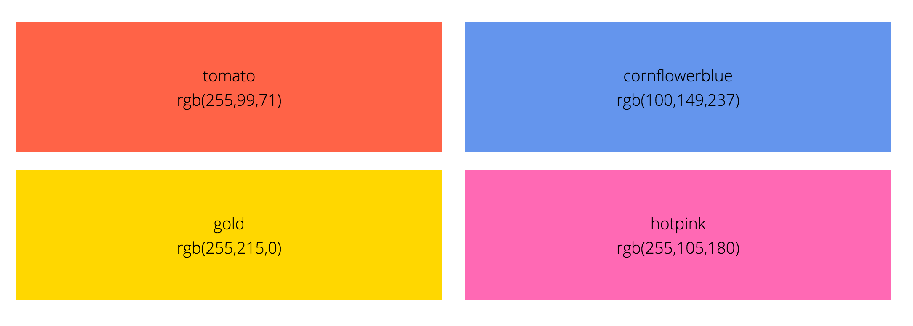
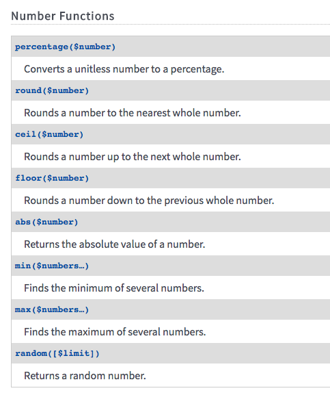
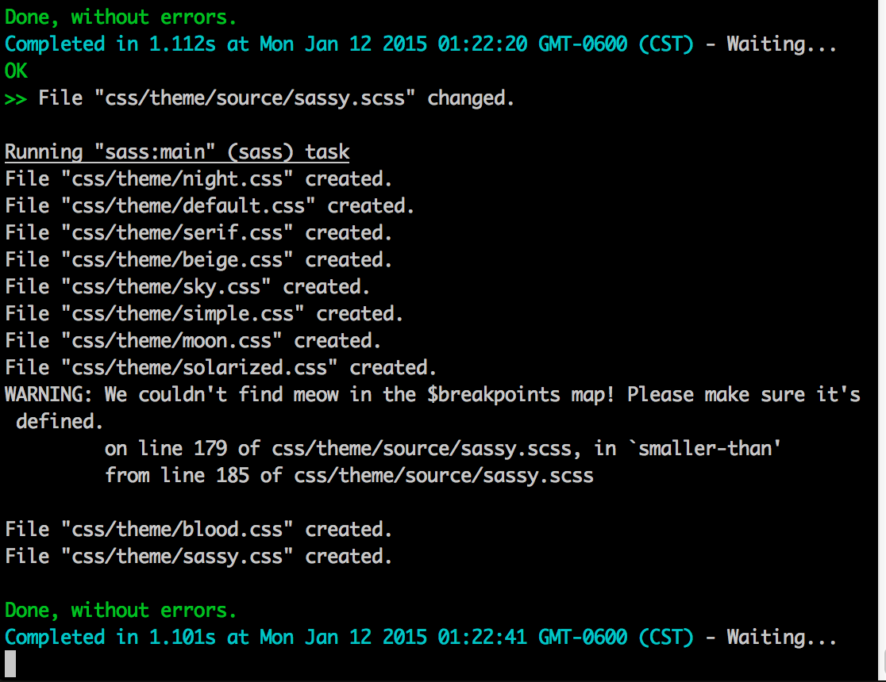
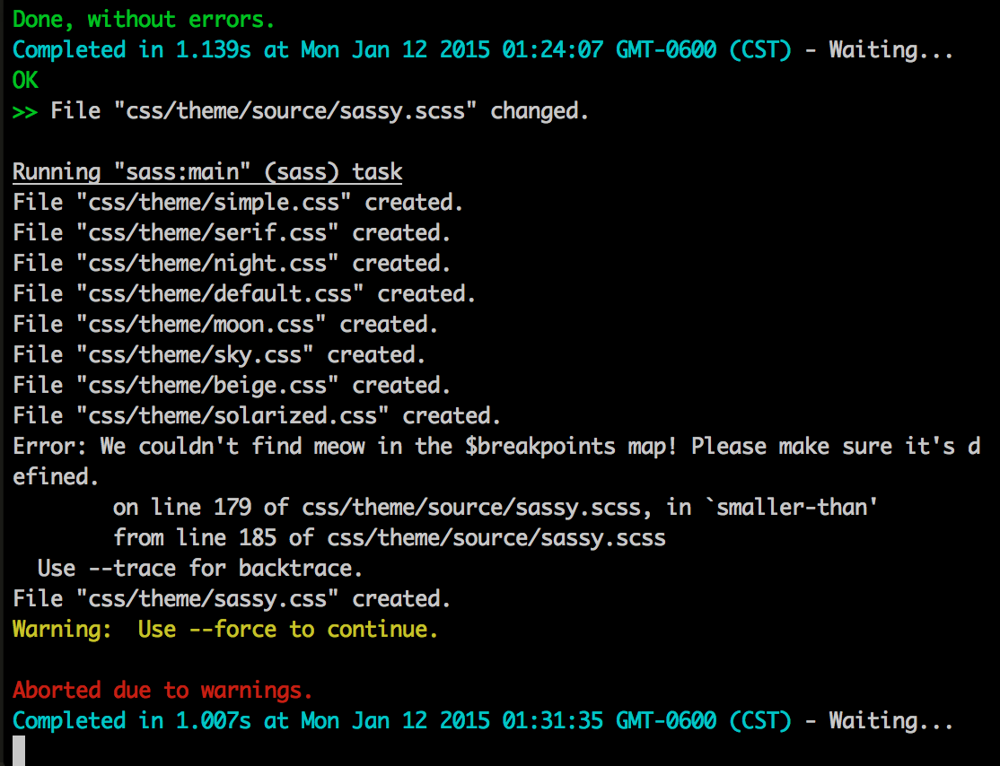

Advanced Sass Workshop
Hello, PEERS 2015 :)
Sass...!?
Sass:
Syntactically Awesome Style Sheets:
Sass is the most mature, stable, and powerful professional grade CSS extension language in the world. sass-lang.com
Sass...!?
Sass is a CSS preprocessor.
CSS
.navbar .nav .dropdown-toggle .caret, .navbar .nav .open.dropdown .caret {
border-top-color: #ffffff;
}
.navbar .nav .active .caret {
opacity: 1;
filter: alpha(opacity=100);
}
.navbar .nav .open > .dropdown-toggle, .navbar .nav .active > .dropdown-toggle, .navbar .nav .open.active > .dropdown-toggle {
background-color: transparent;
}
.navbar .nav .active > .dropdown-toggle:hover {
color: #ffffff;
}
.navbar .nav.pull-right .dropdown-menu {
left: auto;
right: 0;
}
.navbar .nav.pull-right .dropdown-menu:before {
left: auto;
right: 12px;
}
.navbar .nav.pull-right .dropdown-menu:after {
left: auto;
right: 13px;
}
.breadcrumb {
padding: 7px 14px;
margin: 0 0 18px;
background-color: #fbfbfb;
background-image: -moz-linear-gradient(top, #ffffff, #f5f5f5);
background-image: -ms-linear-gradient(top, #ffffff, #f5f5f5);
background-image: -webkit-gradient(linear, 0 0, 0 100%, from(#ffffff), to(#f5f5f5));
background-image: -webkit-linear-gradient(top, #ffffff, #f5f5f5);
background-image: -o-linear-gradient(top, #ffffff, #f5f5f5);
background-image: linear-gradient(top, #ffffff, #f5f5f5);
background-repeat: repeat-x;
filter: progid:DXImageTransform.Microsoft.gradient(startColorstr='#ffffff', endColorstr='#f5f5f5', GradientType=0);
border: 1px solid #ddd;
-webkit-border-radius: 3px;
-moz-border-radius: 3px;
border-radius: 3px;
-webkit-box-shadow: inset 0 1px 0 #ffffff;
-moz-box-shadow: inset 0 1px 0 #ffffff;
box-shadow: inset 0 1px 0 #ffffff;
}
.breadcrumb li {
display: inline-block;
text-shadow: 0 1px 0 #ffffff;
}
.breadcrumb .divider {
padding: 0 5px;
color: #999999;
}
.breadcrumb .active a {
color: #333333;
}
.pagination {
height: 36px;
margin: 18px 0;
}
.pagination ul {
display: inline-block;
*display: inline;
/* IE7 inline-block hack */
*zoom: 1;
margin-left: 0;
margin-bottom: 0;
-webkit-border-radius: 3px;
-moz-border-radius: 3px;
border-radius: 3px;
-webkit-box-shadow: 0 1px 2px rgba(0, 0, 0, 0.05);
-moz-box-shadow: 0 1px 2px rgba(0, 0, 0, 0.05);
box-shadow: 0 1px 2px rgba(0, 0, 0, 0.05);
}
.pagination li {
display: inline;
}
.pagination a {
float: left;
padding: 0 14px;
line-height: 34px;
text-decoration: none;
border: 1px solid #ddd;
border-left-width: 0;
}
.pagination a:hover, .pagination .active a {
background-color: #f5f5f5;
}
.pagination .active a {
color: #999999;
cursor: default;
}
.pagination .disabled a, .pagination .disabled a:hover {
color: #999999;
background-color: transparent;
cursor: default;
}
.pagination li:first-child a {
border-left-width: 1px;
-webkit-border-radius: 3px 0 0 3px;
-moz-border-radius: 3px 0 0 3px;
border-radius: 3px 0 0 3px;
}
.pagination li:last-child a {
-webkit-border-radius: 0 3px 3px 0;
-moz-border-radius: 0 3px 3px 0;
border-radius: 0 3px 3px 0;
}
.pagination-centered {
text-align: center;
}
.pagination-right {
text-align: right;
}
.pager {
margin-left: 0;
margin-bottom: 18px;
list-style: none;
text-align: center;
*zoom: 1;
}
.pager:before, .pager:after {
display: table;
content: "";
}
.pager:after {
clear: both;
}
.pager li {
display: inline;
}
.pager a {
display: inline-block;
padding: 5px 14px;
background-color: #fff;
border: 1px solid #ddd;
-webkit-border-radius: 15px;
-moz-border-radius: 15px;
border-radius: 15px;
}
.pager a:hover {
text-decoration: none;
background-color: #f5f5f5;
}
.pager .next a {
float: right;
}
.pager .previous a {
float: left;
}
- Getting Started with Sass
- Why Sass?
More Resources:
Ruby Sass
rubygem install sasssass –watch input.scss:output.css
Node Sass
nodenpm install node-sasssass –watch input.scss:output.css
- Getting Started with Sass
- Why Sass?
- Another Getting Started with Sass
More Resources:
A Quick Intro to Sass
- Syntax
- Variables
- Variable Abstraction
- Nesting
Syntax
.sass
#sidebar
width: 30%
background-color: #faa
.scss
#sidebar {
width: 30%;
background-color: #faa;
}
- scss vs. sass
More Resources:
Variables
Placeholders for values used multiple times.
.scss
$open-sans-stack: 'Open Sans', Arial, Helvetica, sans-serif;
$pink: #c69;
body {
font-family: $open-sans-stack;
}
h2 {
color: $pink;
}
.css output
body {
font-family: "Open Sans", sans-serif;
}
h2 {
color: #c69;
}
- Thoughtbot on Sass Variables
More Resources:
Variable Abstraction
Variables should be abstracted into themes.
.scss
// variables.scss
$open-sans-stack: 'Open Sans', Arial, Helvetica, sans-serif;
$pink: #c69;
// theme.scss
$font--copy: $open-sans-stack;
$header--color: $pink;
// typography.scss
body {
font-family: $open-sans-stack;
}
h2 {
color: $header--color;
}
.css output
body {
font-family: "Open Sans", sans-serif;
}
h2 {
color: #c69;
}
Nesting
Nesting allows you to organize your code in relevant chunks
.scss
.sidebar {
float: left;
h2 {
font-size: 1.2em;
}
}
.css output
.sidebar {
float: left;
}
.sidebar h2 {
font-size: 1.2em;
}
A word on Nesting
- Never go more than 3 levels deep
- Nesting with an
&is a-okay
When Nesting Goes Wrong
Do not do this.
.scss
body {
sidebar {
.news-section {
.description {
a {
color: #f00;
}
}
}
}
}
.css output
body sidebar .news-section .description a {
color: #f00;
}
Yay Nesting!
.scss
$blue: #00f;
.blue-link {
color: $blue;
&:hover,
&:focus {
color: mix($blue, white, 50%);
}
}
.css output
.blue-link {
color: #00f;
}
.blue-link:hover, .blue-link:focus {
color: #7f7fff;
}
- BEM documentation
- SMACSS documentation
- Slides on Object Oriented Sass
More Resources:
The Almighty Ampersand
- Overview
- Nesting with Ampersands
- Naming Conventions
- Trailing Ampersand
- Double Ampersand

Ampersand Walk Through
Beyond Basics
- @extend
- Placeholder Selectors
- @mixin
- @include
@extend (Selector Inheritance)
Extending will append the element to receive the style block.
.scss
.kitten {
background-image: url("../img/kitten.png");
}
.kitten-with-hat {
@extend .kitten;
&:after {
content: " ";
background-image: url("../img/hat.png");
}
}
.css output
.kitten, .kitten-with-hat {
background-image: url("../img/kitten.png");
}
.kitten-with-hat:after {
content: " ";
background-image: url("../img/hat.png");
}
- Extending Sass Without Mess
More Resources:
.kitten
.kitten-with-hat

Placeholder Selectors
Placeholders are "invisible" until extended
.scss
$pink: #c69;
$blue: #00f;
// I'm not real yet
%link {
text-decoration: none;
font-weight: 300;
}
.pink-link {
@extend %link; //extending
color: $pink;
}
.blue-link {
@extend %link; //extending
color: #00f;
}
.css output
.pink-link, .blue-link {
text-decoration: none;
font-weight: 300;
}
.pink-link {
color: #c69;
}
.blue-link {
color: #00f;
}
Mixins & @include
Mixins are blocks of code you @include. We'll get fancier with them later.
.scss
@mixin center-block {
display: block;
margin-left: auto;
margin-right: auto;
}
.nyan-cat {
width: 450px;
@include center-block;
}
.css output
.nyan-cat {
width: 450px;
display: block;
margin-left: auto;
margin-right: auto;
}
- Handy Sass Mixins
More Resources:
Control Directives
- Lists
- List Functions
- Maps
- @each loop
- @for loop
- @while loop
Lists
Basic List
$social-icons: twitter, facebook, instagram, dribbble;
Space-seperated Values
$types: text #f00, photo #c69, video #c0ffee, link #bada55;
- Understanding Sass Lists
- Advanced Sass List Functions
- Sassy Lists
More Resources:
Lists in Action (@each)
Note: Sass Lists start at 1, not 0.
.scss
$types: text #f00, photo #c69, video #c0ffee, link #bada55;
@each $type in $types {
.post-type-#{nth($type, 1)} .post-icon{
background: nth($type, 2);
}
}
.css output
.post-type-text .post-icon {
background: #f00;
}
.post-type-photo .post-icon {
background: #c69;
}
.post-type-video .post-icon {
background: #c0ffee;
}
.post-type-link .post-icon {
background: #bada55;
}
List Functions

- Advanced List Functions
More Resources:
Let's Play with Lists
Maps
Maps are structured in key: value pairs and accessed with map-get($map-name, key).
.scss
$breakpoints: (
small: 767px,
medium: 992px,
large: 1200px
);
.sidebar {
width: 30%;
@media (max-width: map-get($breakpoints, small)) {
width: 100%;
}
}
.css output
.sidebar {
width: 30%;
}
@media (max-width: 767px) {
.sidebar {
width: 100%;
}
}
- Sass Maps are Awesome!
- Using Sass Maps
More Resources:
Map Functions

@each loop
.scss
@import 'compass';
$colors: (
tomato rgb(255,99,71) 'rgb(255,99,71)',
'cornflowerblue' rgb(100,149,237) 'rgb(100,149,237)',
gold rgb(255,215,0) 'rgb(255,215,0)',
hotpink rgb(255,105,180) 'rgb(255,105,180)',
);
@each $color in $colors {
$var-name: nth($color, 1);
$hex: nth($color, 2);
$css-name: nth($color, 3);
.color-box.#{$var-name} {
@include contrasted($hex);
&:before {
content: '#{$var-name}';
}
&:after {
content: '#{$css-name}';
}
}
}
.css output
.color-box.tomato {
background-color: tomato;
color: #000;
}
.color-box.tomato:before {
content: "tomato";
}
.color-box.tomato:after {
content: "rgb(255,99,71)";
}
.color-box.cornflowerblue {
background-color: cornflowerblue;
color: #000;
}
.color-box.cornflowerblue:before {
content: "cornflowerblue";
}
.color-box.cornflowerblue:after {
content: "rgb(100,149,237)";
}
.color-box.gold {
background-color: gold;
color: #000;
}
.color-box.gold:before {
content: "gold";
}
.color-box.gold:after {
content: "rgb(255,215,0)";
}
.color-box.hotpink {
background-color: hotpink;
color: #000;
}
.color-box.hotpink:before {
content: "hotpink";
}
.color-box.hotpink:after {
content: "rgb(255,105,180)";
}
@each loop

@for loop
For loop using through
.scss
$columns: 4;
@for $i from 1 through $columns {
.cols-#{$i} {
width: ((100 / $columns) * $i) * 1%;
}
}
.css output
.cols-1 {
width: 25%;
}
.cols-2 {
width: 50%;
}
.cols-3 {
width: 75%;
}
.cols-4 {
width: 100%;
}
- Handy Advanced Sass
More Resources:
@for loop
For loop using to
.scss
$columns: 4;
@for $i from 1 to $columns {
.cols-#{$i} {
width: ((100 / $columns) * $i) * 1%;
}
}
.css output
.cols-1 {
width: 25%;
}
.cols-2 {
width: 50%;
}
.cols-3 {
width: 75%;
}
- Handy Advanced Sass
More Resources:
@while loop
The @while loop has absolutely no use case in a real Sass project, especially since there is no way to break a loop from the inside. Do not use it.
- @if @for @each @while loops
More Resources:
Let's do Some Math & Play with Colors
- Supported Operators
- Sass Math
- Color Functions
- Playing with Color
- Mix > Lighten/Darken
Supported Operators
Calculation
- +
- -
- *
- /
- %
Comparison
- ==
- !=
- >
- <
Number Functions

Math with Color
Input:
p {
color: #010203 + #040506;
} 01 + 04 = 05, 02 + 05 = 07, and 03 + 06 = 09
Computed Value:
p {
color: #050709;
}- Sass Functions Docs
More Resources:
Color Functions
Playing with Color
See the Pen Experiments with Sass Color Functions by KatieK (@KatieK2) on CodePen.
- A Visual Guide to Sass & Compass Color Functions
More Resources:
Note: Mix > Lighten or Darken
See the Pen Dadgumit, Blowouts by KatieK (@KatieK2) on CodePen.
Make A Color Palette
Let's Talk Mixins
- Mixins + @content
- Mixins + Maps
- Default Settings
- Null Defaults
- A Sassy Shape Mixin
- Using Sassy Shapes
- SVG Fall back Mixin
- Recreating contrasted()
Mixins and @content
Mixins can take a variety of args, including @content blocks.
.scss
//mixin
@mixin smaller-than($width) {
@media (max-width: $width) {
@content;
}
}
@mixin larger-than($width) {
@media (min-width: $width) {
@content;
}
}
//usage
.heading {
font-size: 2em;
@include smaller-than(300px) {
font-size: 1.5em;
}
@include larger-than(768px) {
font-size: 3em;
}
}
.css output
.heading {
font-size: 2em;
}
@media (max-width: 300px) {
.heading {
font-size: 1.5em;
}
}
@media (min-width: 768px) {
.heading {
font-size: 3em;
}
}
- Media Queries in Sass
More Resources:
Mixins and Maps
.scss
//our map of breakpoints from earlier
$breakpoints: (
small: 767px,
medium: 992px,
large: 1200px
);
//mixin using map-get
@mixin smaller-than($point-name) {
$width: map-get($breakpoints, $point-name);
@media (max-width: $width) {
@content;
}
}
@mixin larger-than($point-name) {
$width: map-get($breakpoints, $point-name);
@media (min-width: $width) {
@content;
}
}
//usage
.heading {
font-size: 2em;
@include smaller-than(small) {
font-size: 1.5em;
}
@include larger-than(medium) {
font-size: 3em;
}
}
.css output
.heading {
font-size: 2em;
}
@media (max-width: 300px) {
.heading {
font-size: 1.5em;
}
}
@media (min-width: 768px) {
.heading {
font-size: 3em;
}
}
Variable Inputs
.scss
// setting defaults
@mixin size($width, $height: $width) {
width: $width;
height: $height;
}
.ex-1 {
@include size(10px, 30px);
}
.ex-2 {
@include size(10px);
}
.css output
.ex-1 {
width: 10px;
height: 30px;
}
.ex-2 {
width: 10px;
height: 10px;
}
Sassy Shapes Mixin
Mixins can take values and run logic loops.
See the Pen Sassy Shape Machine Mixin by Una Kravets (@unax3) on CodePen.
Sassy Shapes Mixin
Putting it to use.
See the Pen Sassy CSS Puppy by Una Kravets (@unax3) on CodePen.
SVG fallback mixin
$image-path: '../img' !default;
$fallback-extension: 'png' !default;
$retina-suffix: '@2x';
@mixin background-image($name, $size: false){
background-image: url(#{$image-path}/#{$name}.svg);
@if($size){
background-size: $size;
}
.no-svg &{
background-image: url(#{$image-path}/#{$name}.#{$fallback-extension});
@media only screen and (-moz-min-device-pixel-ratio: 1.5), only screen and (-o-min-device-pixel-ratio: 3/2), only screen and (-webkit-min-device-pixel-ratio: 1.5), only screen and (min-device-pixel-ratio: 1.5) {
background-image: url(#{$image-path}/#{$name}#{$retina-suffix}.#{$fallback-extension});
}
}
}- 8 Useful Mixins
More Resources:
Compass contrasted() Mixin
Functions
- @function
- px to rem function
- Property Getter
- Arglists
@function
Instead of outputting lines of Sass the way mixins do, functions return a value.
@function
// @function creation
@function my-calculation-function($some-number, $another-number){
@return $some-number + $another-number
}
// Sass usage
.my-module {
padding: my-calculation-function(10px, 5px);
}
// CSS output
.my-module {
padding: 15px;
}
PX to REM function
@function rem-please($px) {
@return ($px/16)+rem;
}
h1 {
font-size: rem-please(32);
}
// CSS:
// h1 {
// font-size: 2rem;
// }
Property Getter
// Map of Props:
$properties:(
bodybg: #aeaeae,
iconcolor: $color2,
textcolor: $color3,
bodyfont:'PT Sans'
);
// Prop-Getter Function:
@function prop($value, $map: $properties){
$value: map-get($map, $value);
@return $value;
}
// Usage:
body {
background: prop(bodybg);
}
Arglist
When you have an unknown number of inputs
@mixin shadows($shadows...) {
box-shadow: $shadows;
}
- Blog Post on Arglists
More Resources:
Theming
- !default
- @warn and @error
- Theming with Maps
- Modular Animations
- Null Defaults
!default
!default will assign a value only if the variable doesn't already have one
.scss
$font--base-size: 18px;
// set defaults
$font--base-size: 20px !default;
$font--base-color: #ccc !default;
// implement
body {
font-size: $font--base-size;
color: $font--base-color;
}.css
body {
font-size: 18px;
color: #ccc; }!default Theming
It creates a global variable for theming
.scss
// set defaults
$font--base-size: 20px !default;
$font--base-color: #ccc !default;
// implement
body {
font-size: $font--base-size;
color: $font--base-color;
}
$font--base-size: 18px;
h1 {
font-size: $font--base-size;
color: $font--base-color;
}.css
body {
font-size: 20px;
color: #ccc;
}
h1 {
font-size: 18px;
color: #ccc;
}@warn & @error
You can set up custom warnings for debugging your Sass.
$breakpoints: (
small: 767px,
medium: 992px,
large: 1200px
);
@mixin smaller-than($point-name) {
@if map-has-key($breakpoints, $point-name) {
$width: map-get($breakpoints, $point-name);
@media (max-width: $width) {
@content;
}
}
@else {
@warn "We couldn't find #{$point-name} in the $breakpoints map! "
+ "Please make sure it's defined. ";
}
}
.kitten-with-hat {
@include smaller-than(meow) {
background-color: $pink;
}
}@warn vs. @error
@warn

@error

Theming using Maps
variables.scss
$__color-palette: (
'blue': (
core: #4178be,
10: #c0e6ff,
20: #7cc7ff,
30: #5aaafa,
40: #5596e6,
50: #4178be,
60: #325c80,
70: #264a60,
80: #1d3649,
90: #152935,
100: #010205
),
'green': (
core: #4b8400,
10: #c8f08f,
20: #b4e051,
30: #8cd211,
40: #6eb400,
50: #4b8400,
60: #2d660a,
70: #144d14,
80: #0a3c02,
90: #0c2808,
100: #010200
),
'teal': (
core: #008571,
10: #a7fae6,
20: #6eedd8,
30: #41d6c3,
40: #00b4a0,
50: #008571,
60: #006d5d,
70: #005448,
80: #003c32,
90: #012b22,
100: #000202
),
'purple': (
core: #9855d4,
10: #eed2ff,
20: #d7aaff,
30: #ba8ff7,
40: #af6ee8,
50: #9855d4,
60: #734098,
70: #562f72,
80: #412356,
90: #311a41,
100: #030103
),
'magenta': (
core: #db2780,
10: #ffd2ff,
20: #ff9eee,
30: #ff71d4,
40: #ff3ca0,
50: #db2780,
60: #a6266e,
70: #7c1c58,
80: #601146,
90: #3a0b2e,
100: #040102
)
);
functions.scss
// Import the IBM Color Palette
@import '../variables/colors';
//////////////////////////////
// Color Palette
//
// Gets the specified color from the color palette
//
// Usage:
//
// background: color('blue', 80); // #1D3649
// background: color('blue'); // #4178BE
//////////////////////////////
@function color($color, $tone: 'core') {
// Add a little helper so tone can be passed as single digit number
@if type-of($tone) == 'number' {
@if $tone % 10 == $tone {
$tone: $tone * 10;
}
}
@return map-get(map-get($__color-palette, $color), $tone);
}
- Using Maps in Color Palettes
More Resources:
Theming Using Maps
A better look at functions.scss
// Import the IBM Color Palette
@import '../variables/colors';
//////////////////////////////
// Color Palette
//
// Gets the specified color from the color palette
//
// Usage:
//
// background: color('blue', 80); // #1D3649
// background: color('blue'); // #4178BE
//////////////////////////////
@function color($color, $tone: 'core') {
// Add a little helper so tone can be passed as single digit number
@if type-of($tone) == 'number' {
@if $tone % 10 == $tone {
$tone: $tone * 10;
}
}
@return map-get(map-get($__color-palette, $color), $tone);
}
Try it Yourselves!
(Color Mapping)
Bringing it All Together
(Modular Animations)
Sass++
- File Organization
- SassDoc
- Advanced Example: Pixel Art
Partials & @import
Sass files are split into "partials" for better organization.
Manifest File (main.scss)
@import "vendors/bootstrap";
@import "vendors/jquery-ui";
@import "utils/variables";
@import "utils/functions";
@import "utils/mixins";
@import "utils/placeholders";
@import "base/reset";
@import "base/typography";
@import "layout/navigation";
@import "layout/grid";
@import "layout/header";
@import "layout/footer";
@import "layout/sidebar";
@import "layout/forms";
@import "components/buttons";
@import "components/carousel";
@import "components/cover";
@import "components/dropdown";
@import "pages/home";
@import "pages/contact";
@import "themes/theme";
@import "themes/admin";
- Sass Director
- Wrangling Sass @import files
More Resources:
SassDoc
A methodology for consistent documentation
/// Mixin helping defining both `width` and `height` simultaneously.
///
/// @author Hugo Giraudel
///
/// @access public
///
/// @param {Length} $width - Element's `width`
/// @param {Length} $height ($width) - Element's `height`
///
/// @example scss - Usage
/// .foo {
/// @include size(10em);
/// }
///
/// .bar {
/// @include size(100%, 10em);
/// }
///
/// @example css - CSS output
/// .foo {
/// width: 10em;
/// height: 10em;
/// }
///
/// .bar {
/// width: 100%;
/// height: 10em;
/// }
@mixin size($width, $height: $width) {
width: $width;
height: $height;
}- Sass Doc Website
- SassDoc Repo on Github
More Resources:
Advanced Sass Fun
(Pixel Art)
Understanding Drop Shadow Art
See the Pen Dhuun by Jordan Wade (@jordanwade) on CodePen.
Making Pixel Art With Sass
See the Pen Cross stitch: Pixel art out of box shadow magicerizer by Jack Armley (@jackarmley) on CodePen.
Your Turn!
Work on refactoring your own code OR
Build a Style Guide & Layout System based on a single color.
- File Organization
- Variable Structure
- Style Syntax
- Using mixins with debugging